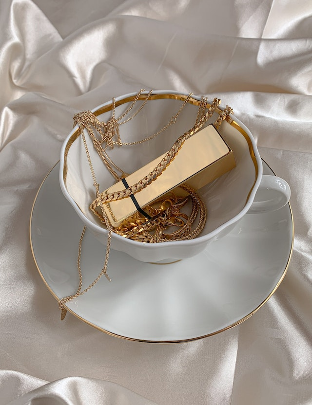

Bem Vindo !

Como proprietário de uma loja de ourives, estou animado para apresentar-lhe um mundo de joias e peças de alta qualidade. Aqui, oferecemos uma ampla variedade de opções para satisfazer os gostos e necessidades de nossos clientes. Como ourives, nosso objetivo é criar peças únicas que celebrem momentos importantes na vida de nossos clientes, incluindo anéis de noivado, alianças de casamento, joias personalizadas e muito mais.
Como loja de ourives, resolvemos problemas como a dificuldade em encontrar peças de qualidade e personalizadas em outros lugares. Com nossas habilidades e experiência, somos capazes de trabalhar com nossos clientes para criar peças exclusivas e personalizadas que atendam às suas especificações. Também oferecemos reparos de joias e manutenção, garantindo que as peças favoritas de nossos clientes durem por muitos anos.
Sobre mim!
Eu sou um ourives com mais de 23 anos de experiência na indústria de joias, trabalhando desde o ano 2000 até os dias atuais. Ao longo desses anos, desenvolvi habilidades em trabalhar com uma ampla variedade de metais preciosos, incluindo ouro, prata e platina, bem como com pedras preciosas, como diamantes, safiras, rubis e esmeraldas.
Minha paixão pela criação de joias começou quando eu era jovem e sempre gostei de trabalhar com as mãos. A partir daí, busquei aprimorar minhas habilidades por meio de estudos e prática, sempre buscando maneiras de melhorar minha técnica e criatividade.
Ao longo dos anos, tive a oportunidade de trabalhar em muitos projetos emocionantes e desafiadores, incluindo o design e a criação de anéis de noivado e casamento personalizados, colares, brincos e pulseiras para clientes de todo o mundo.
Sou um perfeccionista e sempre me esforço para garantir que minhas peças sejam feitas com a mais alta qualidade possível, cada uma delas sendo única e feita com precisão nos detalhes. Eu entendo que cada cliente tem suas próprias necessidades e desejos únicos, e sempre trabalho em estreita colaboração com eles para garantir que suas expectativas sejam atendidas e superadas.
Nossa localização